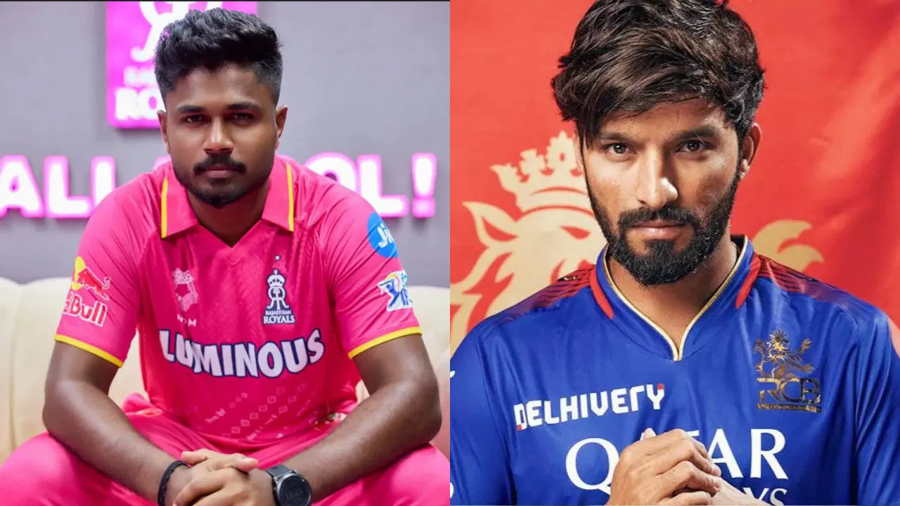

RCB Crush Rajasthan Royals by 9 Wickets
Date: April 13, 2025
RCB dominated RR in a convincing 9-wicket win as the top order fired and the bowlers kept things tight. Virat Kohli scored an unbeaten 87.
Rajat Patidar Named RCB Captain
Date: February 15, 2025

Rajat Patidar has taken over as the captain of RCB for the 2025 season, replacing Faf du Plessis and bringing a fresh outlook to the side.
RCB Unveils 2025 Jersey
Date: March 28, 2025

The franchise revealed their 2025 kit with a bold red-and-black design and new sponsors on board. The launch was attended by the full squad.
Key Signings in IPL 2025 Auction
Date: December 19, 2024
RCB made headlines at the 2025 auction by signing Liam Livingstone, Bhuvneshwar Kumar, and Tim David. The squad looks stronger than ever.